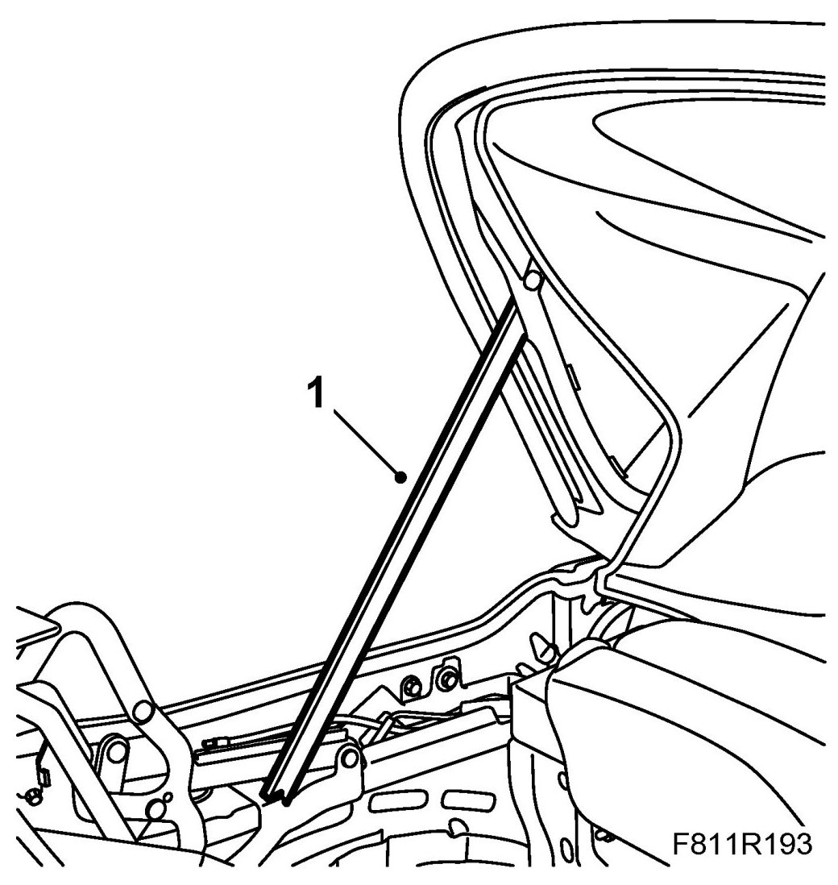
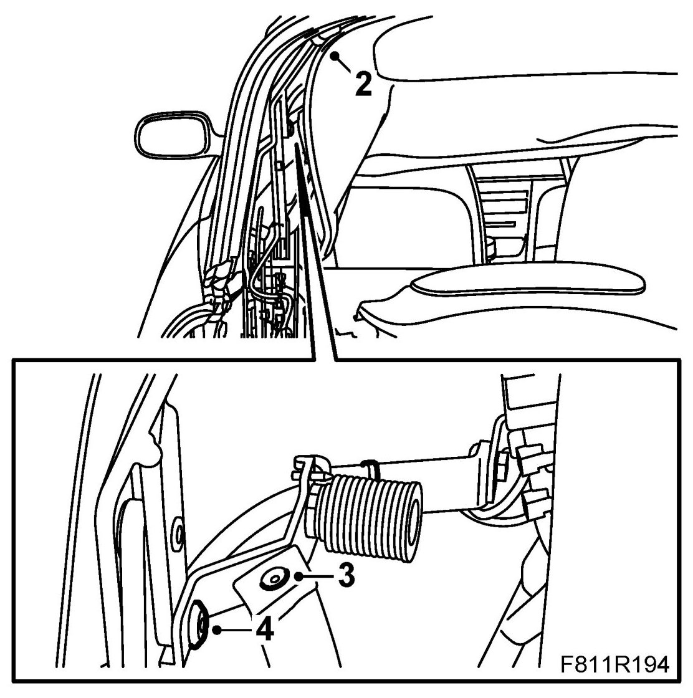
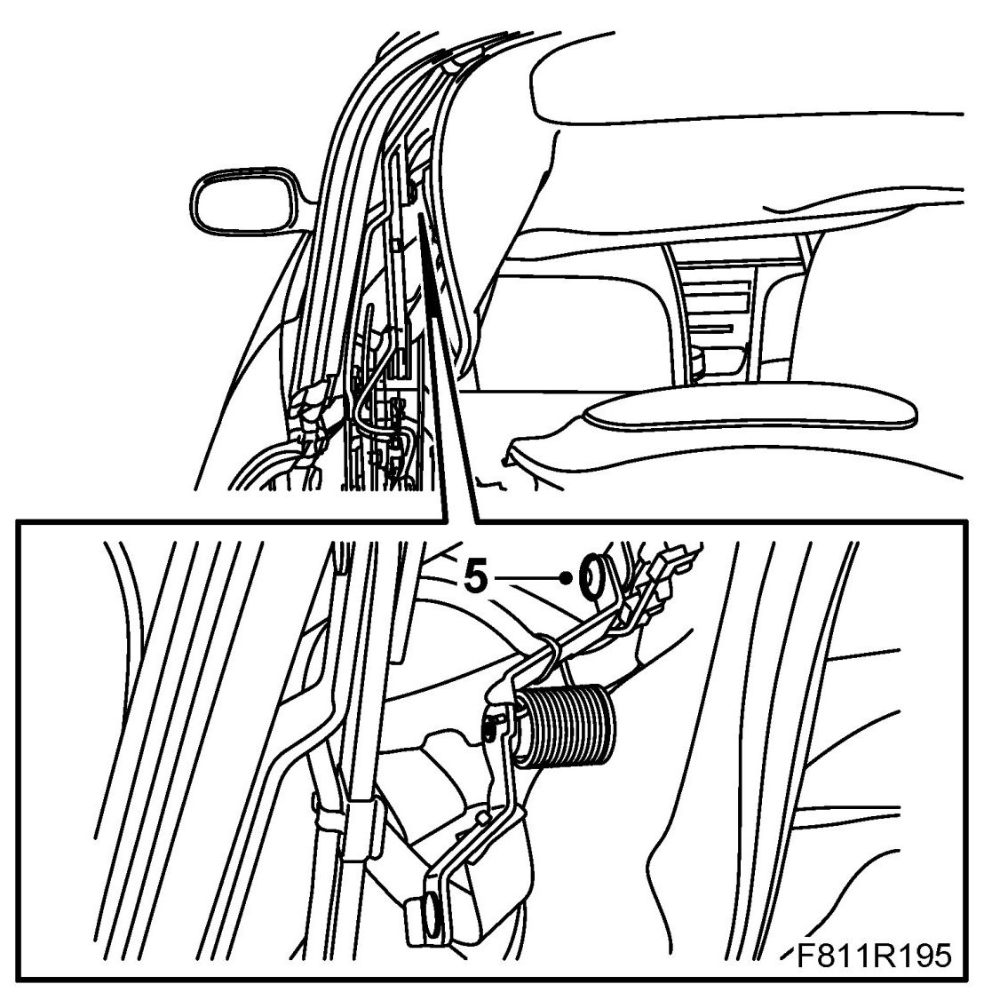
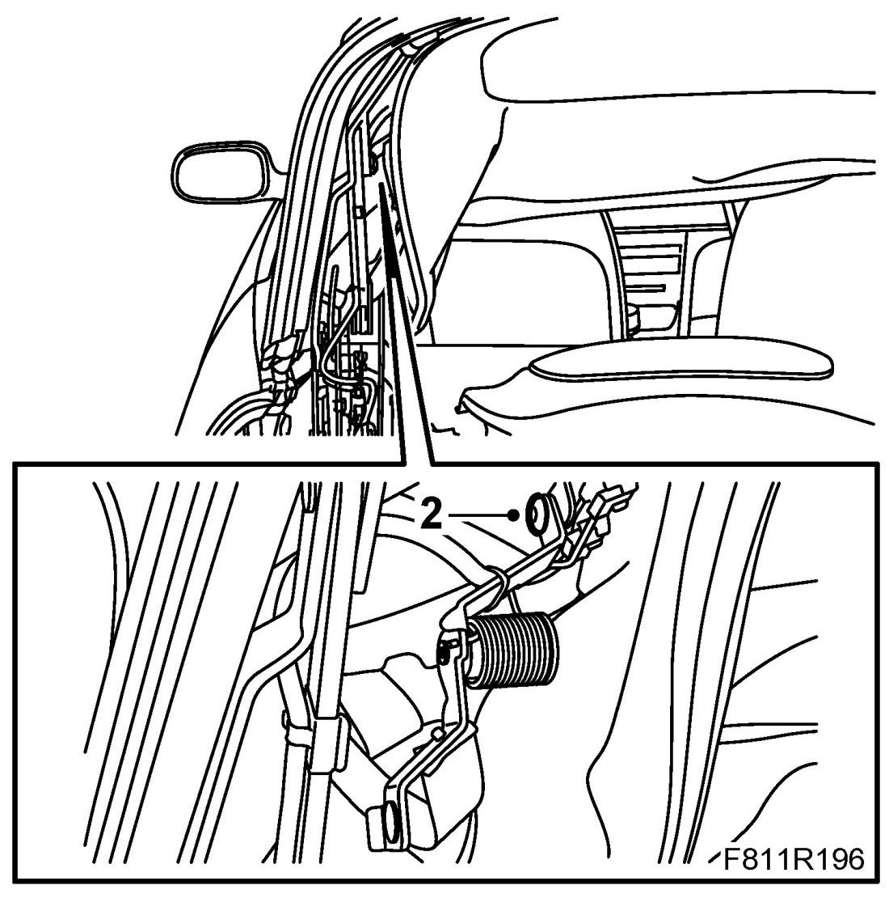
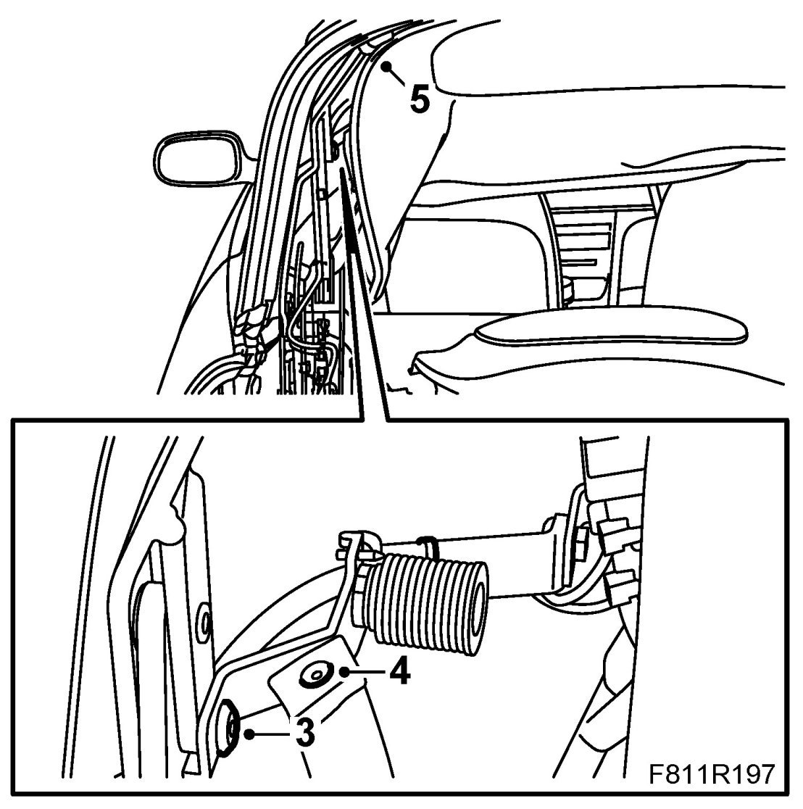

Convertible Top Frame: Service and Repair
Rear Window Mechanism, CV
Removing
1. Open the soft top cover. Raise the sixth bow and support it with 82 93 847 Soft top support.

2. Detach the strap for the headlining.

3. Remove the rivet and clip for the fifth bow guide strap.
4. Remove the lower bolt for the rear window mechanism.
5. Remove the upper bolt for the rear window mechanism. Remove the rear window mechanism.

Fitting
1. Put the rear window mechanism in mounting position.
2. Fit the upper bolt for the rear window mechanism.

3. Fit the lower bolt for the rear window mechanism.

4. Fit the rivet and clips for the fifth bow guide strap.
5. Fasten the strap to the headlining.
6. Remove the soft top support and close the soft top.